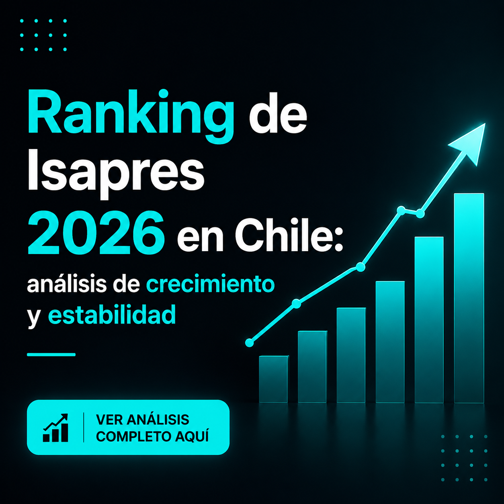
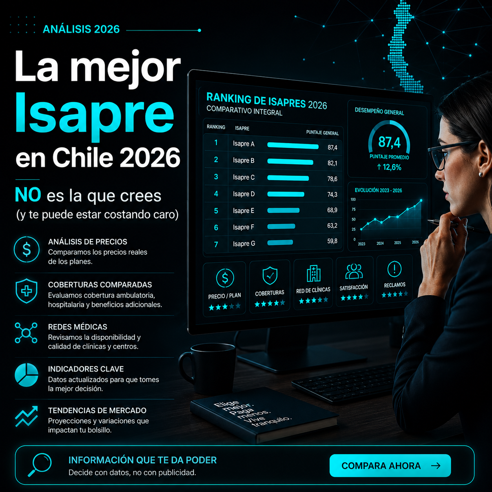
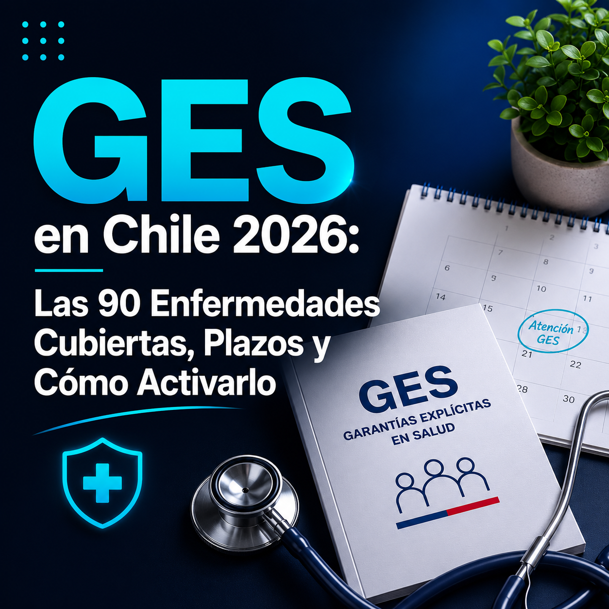
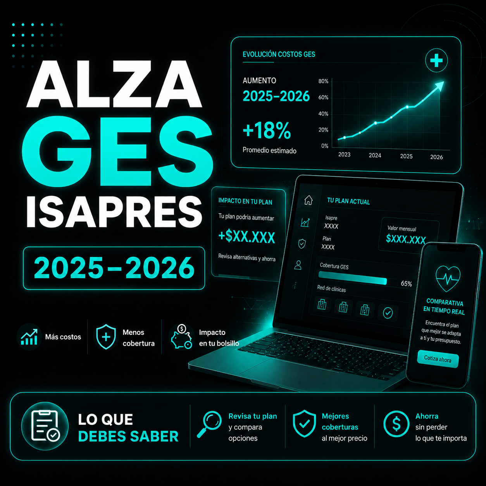
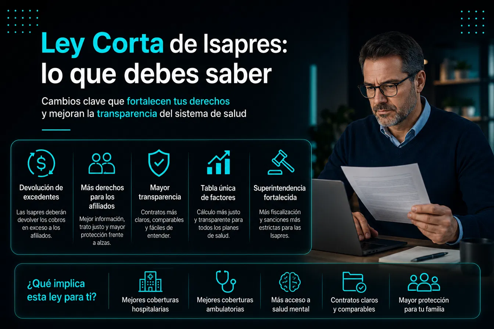

Guías, rankings y análisis con datos oficiales para que tomes la mejor decisión.





Nuestros asesores analizan tu situación sin costo: clínica preferente, renta, cargas y coberturas reales.
Hablar con un asesor gratis